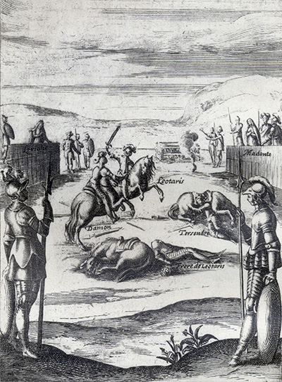
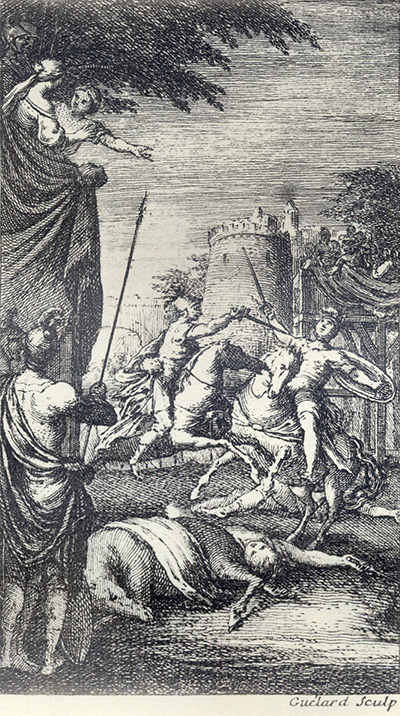

L'Astrée
d'Honoré d'Urfé
Deuxième partie
Livre 6

Tersandre est blessé. Damon se bat contre Léotaris (II, 6, 407)
Au fond, Lériane et Madonthe sont sur des échafauds opposés (II, 6, 404)
Le bûcher préparé est entre elles (II, 6, 411)
L'AstréeII, 6. Édition Vaganay**, 1925Tersandre est blessé. Damon se bat contre Léotaris (II, 6, 407)
Au fond, Lériane et Madonthe sont sur des échafauds opposés (II, 6, 404)
Le bûcher préparé est entre elles (II, 6, 411)
(Voir Illustrations)

Gravure signée Guélard
Damon se bat contre Léotaris. Tersandre et le frère de Léotaris sont au sol (II, 6, 407)
Au fond, Ormanthe et la nourrice de Madonthe (II, 6, 410)
L'AstréeII, 6. Édition Vaganay**, 1925Gravure signée Guélard
Damon se bat contre Léotaris. Tersandre et le frère de Léotaris sont au sol (II, 6, 407)
Au fond, Ormanthe et la nourrice de Madonthe (II, 6, 410)
(Voir Illustrations)
Édition de 1610, p. 323.
Édition de Vaganay, p. 207.
C'est bien témérité d'aimer tant de perfections, mais
aussi c'est bien mon devoir de servir tant de
mérites. Et si vous voulez éteindre l'affection de
ceux qui vous aiment, il faut que de même vous
laissiez les perfections qui vous font aimer. Et si
vous ne voulez point être aimée, veuillez aussi
n'être point aimable, autrement ne trouvez étrange
que vous soyez désobéie ; car la force excusera
toujours ceux qui feront cette offense contre votre
volonté, puisque la nécessité
η ne reconnaît pas
même la Loi que les Dieux nous imposent.
Malgré tous ces discours contre nous inventés,
Malgré tous ces soupçons qui nous ont tourmentés,
Même dans le cercueil, je fais vœu d'être vôtre.
Mais ce fâcheux Argus ne ferait-il pas mieux,
Nous laissant en repos, d'employer tous ses yeux
À garder la beauté qu'il paye pour un autre ?

Livre 5

Livre 7
Référence électronique :
document.write('"'+document.title.substr(0, document.title.indexOf("-")-1)+'". '+"Dernière mise à jour : "+ExtractDate(document.lastModified)+".")Deux visages de L'Astrée.
©2005-2020 E. Henein.
URL :
var today = new Date();
document.write(document.URL +
"<br>Consulté le : " + today.toLocaleDateString("fr-FR") + ".");
var _gaq = _gaq || [];
_gaq.push(['_setAccount', 'UA-19288475-1']);
_gaq.push(['_trackPageview']);
(function() {
var ga = document.createElement('script'); ga.type = 'text/javascript'; ga.async = true;
ga.src = ('https:' == document.location.protocol ? 'https://ssl' : 'http://www') + '.google-analytics.com/ga.js';
var s = document.getElementsByTagName('script')[0]; s.parentNode.insertBefore(ga, s);
})();
Deux visages de L'Astrée.
©2005-2019 Eglal Henein. Creative Commons 4 
Édition critique de la première partie de L'Astrée (1607, 1621)
mise en ligne le 9 avril 2007
Édition critique de la deuxième partie de L'Astrée (1610, 1621)
mise en ligne le 10 octobre 2010
Édition critique de la troisième partie de L'Astrée (1619, 1621)
mise en ligne le 1er novembre 2014
Édition critique de la quatrième partie de L'Astrée (1624)
mise en ligne le 15 janvier 2019
document.write("Dernière mise à jour : "+ExtractDate(document.lastModified))